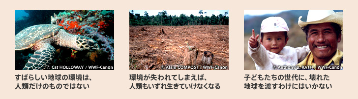

WWFは、地球上で問題になっている、さまざまな環境問題の解決をめざす、民間の団体です。WWFが活動に取り組む理由は一つではありません。たとえば、次のような理由があります。
これらはいずれも、「あたりまえ」のことであり、なおかつ数ある環境保全の理由の中の、ほんの一部にすぎないかもしれません。しかし、本当に心に危機感をおぼえた人たちが、何か行動を起こすには、十分な理由でもあります。 WWFとは、地球の環境とその未来に対する危機感を持ち、問題の解決に希望をつなげようとする、一人ひとりの人たちが、力と意思を集める「場」にほかなりません。
ここ数年、頻繁に起きている世界中の豪雨や猛暑。 「過去最大規模」が多発している大型台風。 こうした異常気象の一因は地球温暖化だと言われています。 地球温暖化の最大の要因となっているのは、私たちが排出している二酸化炭素などの温室効果ガス。 現在も世界の二酸化炭素排出量は日々増加し、地球全体の森林などの生態系が吸収できる量の倍以上にもなっています。 多くの生物を苦しめている異常気象は、人間が拡大させている、というのは言い過ぎでしょうか。
2019年、アマゾンやインドネシアなどで発生した火災は、九州よりも広い面積の森を焼き尽くしました。 森が破壊されるということ。それはつまり、森で暮らしている動物や昆虫の命も失われているということです。 実は、世界の森林は文明が始まったとされる約8000年前と比べて、約3分の2が消滅していると言われています。 とりわけ、20世紀以降の森林破壊のスピードは急激であり、40年後には自然林が完全に消失した国が出る、という結果も出ています。その根底には、大規模な商業伐採や違法伐採、農地転換やそのための放火など、様々な問題があります。 森林は、適切に管理すれば持続可能な資源。人類は、そんな資源ですら根絶やしにしてしまうのでしょうか。
地球の三分の二を覆う海。 そこには、陸上の全ての生命を合わせたよりも、はるかに多くの生命が存在しています。 しかし、その生態系が大きく損なわれようとしています。その主要な原因の一つとされているのがプラスチック汚染。 私たちが気軽に使い捨てているプラスチックは、一度流出すると多くが海に流れ込み、自然界のサイクルの中で容易に分解、吸収されないため、有害な海洋プラスチックとして半永久的に残留し続けます。 魚などの海洋生物を傷つけたり命を奪っているだけでなく、微細粒子として生物に取り込まれることで、食物連鎖を通じ生態系にも深刻な影響を及ぼし、人体への影響が懸念されています。 このままでは、2050年には、海にあるプラスチックの量が魚の量を上回るとも言われています。
現在も、2万8千種以上もの野生生物が絶滅の危機に瀕しています。その主要な原因として挙げられるのが、生息環境の劣化・減少、過剰な捕獲（密猟や乱獲）、外来生物、地球温暖化。そのすべては、私たち人間の影響によるものです。 IUCN（国際自然保護連合）から発表された最新のレッドリスト（正式名称：絶滅のおそれのある種（しゅ）のレッドリスト）には、ゲンゴロウブナやアユモドキといった日本の固有種をはじめ、アフリカゾウやオランウータン、ホッキョクグマといった、私たちに馴染み深い動物たちの名前も載り続けています。加速し続ける野生生物の減少を私たちの手で食い止めることが必要です。